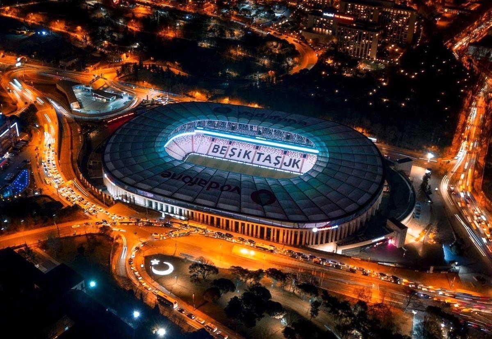

Vodafone Park
Vodafone Park
Vodafone Park, ya da BJK İnönü Spor Kompleksi Vodafone Park İstanbul'un Beşiktaş ilçesinde bulunan 42.590 izleyici kapasiteli çok amaçlı stadyum. Ev sahibi Beşiktaş futbol takımının eski stadyumu BJK İnönü Stadyumu yıkılarak aynı arazi üzerine inşa edilmiştir.
Tarihçe
Vodafone Park, 1947 yılında inşa edilen BJK İnönü Stadyumu'nun bulunduğu alana inşa edilmiştir. İlk kez 23 Şubat 2004 tarihinde gündeme gelen ancak gerekli izinlerin çıkmaması nedeniyle ertelenen projenin inşa süreci resmî olarak 17 Ocak 2013 tarihinde başlatılmıştır. Beşiktaş İnşaat Yatırımları A.Ş. ve Kiptaş A.Ş. konsorsiyumu tarafından projelendirilen ve 2013 Haziran ayında mevcut BJK İnönü Stadyumu yıkılarak aynı yerde inşasına başlanan futbol stadyumu. Vodafone, stadyuma 2014-15 sezonundan başlayarak 15 sezon isim sponsoru olmuştur.[5] Taraftarlardan gelen mektupları stadın temeline karıştırarak "Temelinde Aşk Var" adlı sloganı da başlatmıştır. Stadın çatısı 12 Kasım 2015'te kaldırılmıştır.
Resmi açılış töreni
Açılış, 10 Nisan 2016 tarihinde taraftarlara kapalı, sadece davetlilere açık bir törenle; Cumhurbaşkanı Recep Tayyip Erdoğan, Başbakan Ahmet Davutoğlu, 11. Cumhurbaşkanı Abdullah Gül, Gençlik ve Spor Bakanı Akif Çağatay Kılıç, Türkiye Futbol Federasyonu Başkanı Yıldırım Demirören, Beşiktaş Başkanı Fikret Orman, TBMM eski Başkanı ve Başbakan Yardımcısı Bülent Arınç, Beşiktaş Belediye Başkanı Murat Hazinedar, Beşiktaş teknik direktörü Şenol Güneş ve takım kaptanları Tolga Zengin ve Necip Uysal, Beşiktaş eski Başkanı Serdar Bilgili, Beşiktaş eski teknik direktörleri Gordon Milne, Bernd Schuster, Ertuğrul Sağlam, ile iş, spor ve siyaset dünyasından davetlilerin katılımıyla gerçekleştirildi.[6]
Açılış maçı
Vodafone Park stadyumunda ilk düdük, resmî açılış töreninin ertesi günü 11 Nisan 2016 tarihinde Beşiktaş ile Bursaspor arasında oynanan Süper Lig maçında çalındı. 38420 biletli seyircinin izlediği maçın 21. dakikasında, Beşiktaş'ın Mario Gómez'in ayağından bulduğu gol, Vodafone Arena'da atılan ilk gol olarak kayıtlara geçti.[7][8] Beşiktaş, 3-2 galip gelerek yeni stadında ilk maçını galibiyetle bitirdi.[9]
Tasarım
Vodafone Park, DB Architects isimli firma mimarı Bünyamin Derman tarafından tasarlanmıştır.[10] Türk Telekom Stadyumu ve Bursa Büyükşehir Belediye Stadyumu ile Türkiye'nin C90 görüş açısına sahip stadyumlarından biri olarak tasarlanan yeni İnönü stadyumunda 147 kapalı loca, 4500 VIP tribün ve 162 engelli koltuğu bulunur. İki kat şeklinde tasarlanan stadyumum birinci katı 26°, ikinci katı ise 38°'dir. Stadyum, UEFA stadyum kategorilerinde en üst seviye olan 4. kategori kriterlerini karşılamaktadır. Vodafone Park'ın tasarımı bulunduğu yer ve yasal zorunluluklar nedeniyle modern stadyumlardan 3 alanda ayrılır.